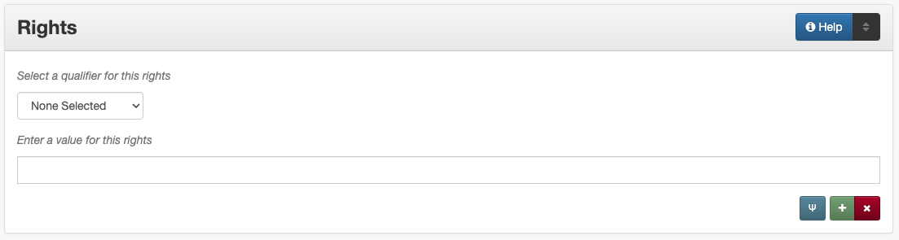

Rights
Definition
Rights information provides information about rights held in and over the resource; describes the conditions under which the work may be used, distributed, reproduced, etc.; how these conditions may change over time; and whom to contact regarding the copyright of the work.
There are four aspects of rights information:
access (level of access that will be allowed to users)
license (if there is a license or rights for the resource)
holder (individual/organization that holds the rights to the item)
statement (other notes or details about the rights or licensing)
Where Can the Rights Information be Found?
For published (copyrighted or CC licensed) materials, rights statements or holders may be printed at the beginning or end of the text (e.g. on a copyright page, title page, front matter, etc.)
For any item, rights information generally comes directly from the institution and may be included in the:
copyrights information form
agreement form
resource owner information
accompanying or supplementary information
How Rights Works in the Metadata Form
- Parts:
Rights type – drop-down menu
Rights information – text field
Note: Some rights information (access and license) open in a pop-up modal
- Repeatable?
Yes - to include different kinds of rights information (up to four), click “Add” to repeat all field parts; each individual information type (access, holder, license, statement) cannot be repeated
- Required?
No (more information)
How Should the Rights be Filled in?
Rights Access
Select the correct access level from the controlled vocabulary
Public |
access is open or there are no restrictions to view the content of the item |
UNT |
access is restricted to users associated with the University of North Texas |
UNT-Strict |
access is restricted to the UNT Community (strictly enforced) |
UNT-Libraries |
access is restricted to users physically located within the Libraries’ buildings |
Rights License
Select the correct access level from the controlled vocabulary
Copyright |
|
Attribution |
Attribution Share Alike |
Attribution No derivatives |
|
Attribution Non-commercial |
|
Attribution Non-commercial Share Alike |
|
Attribution Non-commercial No Derivatives |
|
Public-Domain |
Rights Holder
Guideline |
Examples |
|---|---|
|
Daniel, John Kelly |
|
University of North Texas Libraries |
Rights Statement
Guideline |
Examples |
|---|---|
|
Copyright is held by the author, unless otherwise noted. All rights reserved. |
Material may not be reproduced without permission. |
|
Fiscal Notes is not copyrighted and may be reproduced. The Texas Comptroller of Public Accounts would appreciate credit for material used and a copy of the reprint. |
Other Examples:
- Electronic dissertation: Comparisons of Improvement-Over-Chance Effect Sizes for Two Groups Under Variance Heterogeneity and Prior Probabilities
Access: public - Public
License: copyright - Copyright
Holder: Alexander, Erika D.
Statement: Copyright is held by the author, unless otherwise noted. All rights reserved.
- World War II poster: For freedom’s sake: buy war bonds.
Access: public - Public
License: pd - Public Domain
- Ensemble concert recording: Faculty Recital: 2006-02-05 - David Sundquist, tenor
Access: unt - Use restricted to UNT Community
- Electronic thesis: Development of a Hybrid Molecular Ultraviolet Photodetector based on Guanosine Derivatives
Access: unt_strict - Use restricted to UNT Community (strictly enforced)
License: copyright - Copyright
Holder: Liddar, Harsheetal
Statement: Copyright is held by the author, unless otherwise noted. All rights reserved.
- Technical report: Evaluation of Ground-Water Resources in the Lower Rio Grande Valley, Texas
License: by - Attribution
Statement: Authorization for use or reproduction of any original material contained in this publication, i.e., not obtained from other sources, is freely granted. The Board would appreciate acknowledgement Authorization for use or reproduction of any original material contained in this publication, i.e., not obtained from other sources, is freely granted. The Board would appreciate acknowledgement.
- Magazine: Texas Highways, Volume 46, Number 4, April 1999
License: copyright - Copyright
Holder: Texas Department of Transportation
Resources
UNT Rights Access Controlled Vocabulary
UNT Rights License Controlled Vocabulary
More Guidelines:
Comments
It is necessary to establish who the rights holder of a resource is for situations where there is a question of what can or can’t be done or whom to contact regarding the copyright of the work.
As a general rule, the Rights field is only used when it is important to assert information beyond the boilerplate rights statement in the user interface.